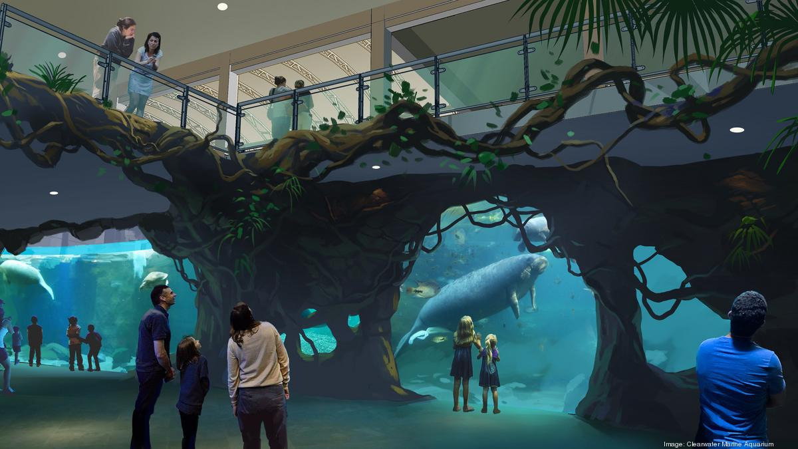

Contamos con instalaciones amplias y accesibles para todas las personas, tanto como para niños y adultos de la tercera edad, contamos con rampas y elevadores para personas con discapacidades motrices, al igual que acceso para animales de servicio. El acuario esta formado por varios edificios, con varias actividades para todas las edades, los tanques para nuestros animales han sido aprobados y con las conciciones perfectas para su pronta recuperación o ser parte de nuestra familia.
